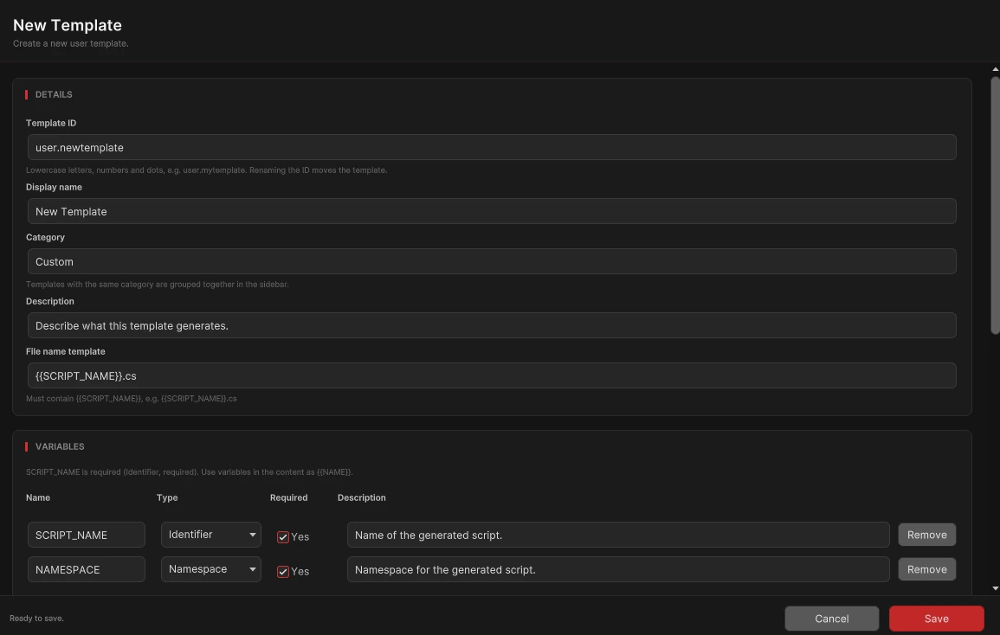
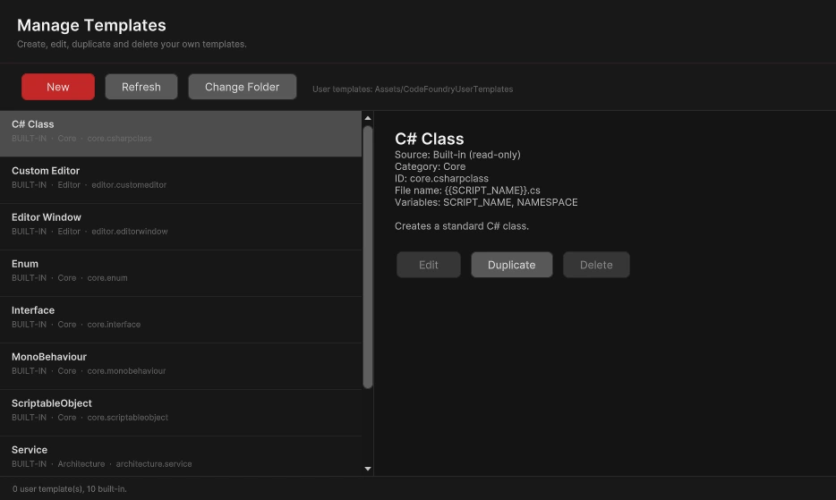

Find your starting point
Browse categories and search the template catalog to find the right script structure.
Your starting point for consistent Unity C# scripts.

Browse categories and search the template catalog to find the right script structure.
See generated code update as you configure variables. Copy the preview or create a file in your project.
Validate names and output locations before generation. Existing files are never silently overwritten.
Resize the Categories, Templates, and Details panels. Panel widths are remembered for your next session.
Create, edit, duplicate, and delete user templates. Built-in templates remain read-only; duplicate one to make an editable starting point.
Choose a user-template folder outside the package so your reusable templates stay separate from tool updates.
Learn about user templates

Define a name, category, description, file-name pattern, and variables for your template. Use it again whenever you need the same structure.
The package also includes a sample showcase with generated code examples.
View the sample showcaseContact us for product information or technical support.